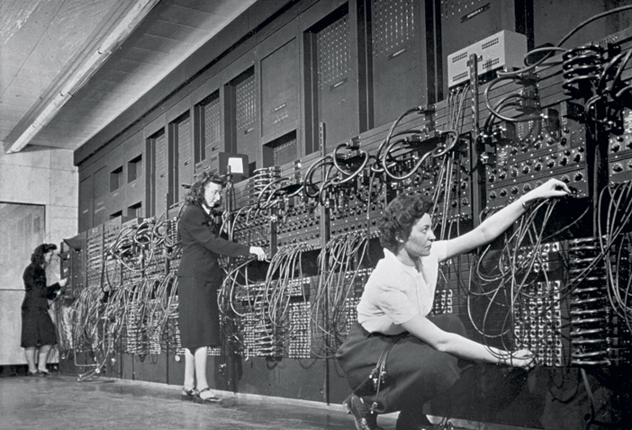

The ENIAC built during World War II was the first programmable general-purpose electronic computer. It was 100 feet long and used more than 17,000 vacuum tubes. It was programmed by placing patch wires into plugboards. Click on the following link to learn more about the ENIAC.
